Ingeniero Agrimensor | Catastro | SIG | Geodesta | Cartógrafo
Gustavo Abel Cáceres Martínez
¡Entre la teoría y la realidad!
Trabajo en la intersección entre catastro, SIG, geodesia, cartografía y ordenamiento territorial. Me interesa que la información territorial deje de ser un producto estático y se convierta en un sistema vivo: útil para planificar, decidir y actuar.
01
Sobre mí
Sobre mí
Soy Ingeniero Agrimensor con experiencia en cartografía, geodesia, planificación territorial, catastro y sistemas de información geográfica. He desarrollado investigaciones sobre modelos de trayectoria de estaciones GNSS y he participado en proyectos vinculados al desarrollo urbano, el monitoreo geoespacial y la actualización catastral. Mi trabajo se ha orientado a la innovación aplicada, especialmente mediante el uso de SIG libre para el fortalecimiento del catastro multifinalitario. Asimismo, he brindado asistencia técnica en gestión del riesgo de incendios forestales, trabajos de gravimetría y docencia en programas de pregrado y postgrado. He liderado procesos de análisis urbano-rural y modernización catastral, promoviendo la implementación de sistemas de referencia geodésicos modernos y enfoques de catastro multifinalitario, con un firme compromiso con la formulación y aplicación de políticas territoriales y ambientales.
Catastro multifinalitario
Geodesia
Cartografía
SIG
Políticas territoriales y ambientales
02
Áreas de enfoque
Áreas de enfoque
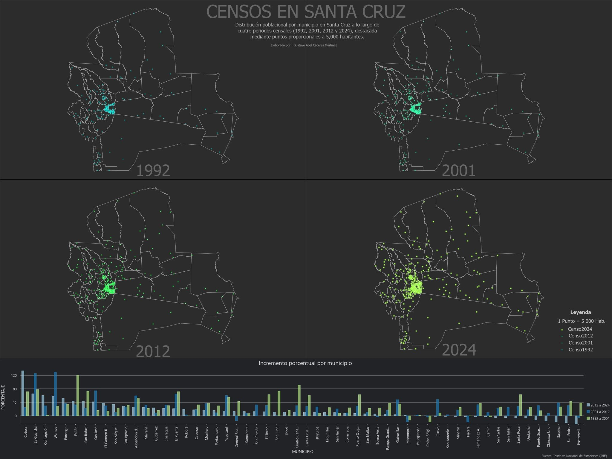
Cartografía temática
Mapas temáticos orientados al análisis espacial y la lectura precisa del territorio.
QGIS
ARCGIS PRO
BLENDER
MAPAS WEB
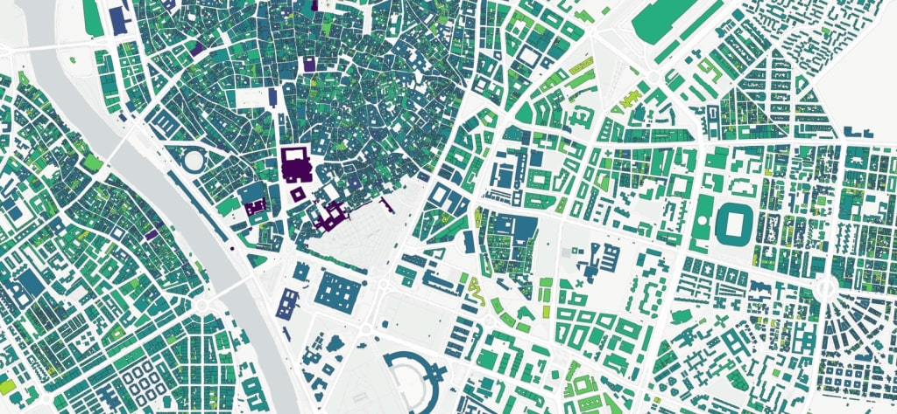
Catastro multifinalitario
Registro, actualización y organización parcelaria para la gestión territorial y municipal.
CATASTRO
NORMAS
SIG
GESTIÓN MUNICIPAL

SIG y análisis geoespacial
Visualización, modelado y análisis territorial para apoyar decisiones basadas en datos.
QGIS
ARCGIS PRO
ANÁLISIS ESPACIAL
PYTHON
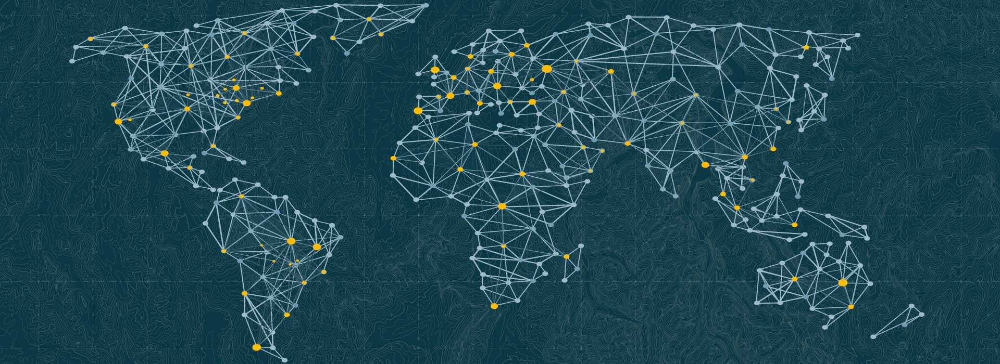
Geodesia y topografía
Levantamientos, redes GNSS y control técnico con enfoque en precisión y referencia espacial.
GNSS
RTK
ESTACIÓN TOTAL
CONTROL
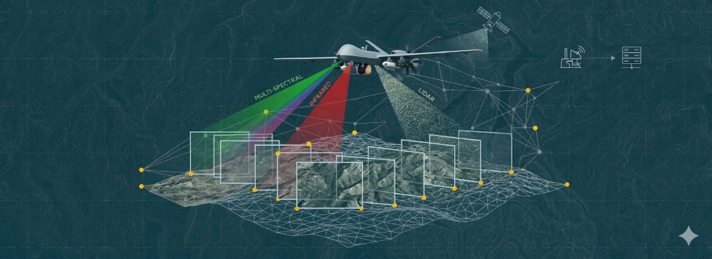
Teledetección y fotogrametría aérea
Interpretación de imágenes y productos fotogramétricos para monitoreo y análisis territorial.
SENTINEL
LANDSAT
GEE
DRONES

Planificación y ordenamiento territorial
Diseño de propuestas territoriales para orientar el crecimiento urbano y rural.
USO DEL SUELO
ZONIFICACIÓN
PTDI
GESTIÓN URBANA
03
Trayectoria
Trayectoria
Actualidad
En curso
Docente de Rutas y Mapas Digitales
- Formación en levantamiento, depuración y análisis de datos territoriales.
- Visualización cartográfica y publicación de información geoespacial.
- Integración de SIG para planificación, gestión y comunicación de rutas y destinos turísticos.
2025
Docente de Diplomado en Catastro Multifinalitario
- Diseño y desarrollo del módulo para gobiernos autónomos municipales.
- Articulación de componentes físicos, jurídicos, económicos, sociales y ambientales.
- Aplicación de SIG, datos abiertos, planificación urbana, tributación y sostenibilidad territorial.
2024 · 2026
Técnico de Catastro en Santa Rosa del Sara
- Actualización de áreas urbanas dispersas y migración CAD-SIG.
- Cartografía, geodesia y soporte técnico para delimitaciones territoriales.
- Propuestas para distritos urbanos-rurales y organización del territorio.
2023
Catastro, Drones y Alerta Temprana
- Estructuración metodológica de un catastro multifinalitario.
- Actualizaciones catastrales con dron y regularización predial.
- Apoyo al SMAT frente a incendios y monitoreo territorial.
2021 · 2022
Cartografía y Urbanismo Municipal
- Análisis de accesibilidad educativa y evaluación del crecimiento urbano.
- Cartografía base municipal e implementación de SIG.
- Soporte para planificación urbana y rural.
2021
Investigación Geodésica en el IGM
- Modelo de trayectoria para la estación GNSS SCRZ.
- Análisis de velocidad por componentes.
- Apoyo al levantamiento gravimétrico para el marco vertical MARGEV.
2020
Asistencia SIG en la Chiquitania
- Priorización de comunidades y soporte técnico geoespacial.
- Reporte de perímetro activo y áreas quemadas.
- Simulación y seguimiento de incendios.
2019 · 2020
UMIG · Autoridad de Bosques y Tierra
- Evaluación de incidencia antrópica con técnicas de teledetección.
- Monitoreo de información geoespacial para gestión territorial.
2018
Topografía para Infraestructura Hídrica
- Apoyo topográfico para mejora del sistema de agua potable de Saipina.
- Trabajo técnico en el sistema de micro riego San Gerónimo-Coloradillo.
04
Galería
Galería

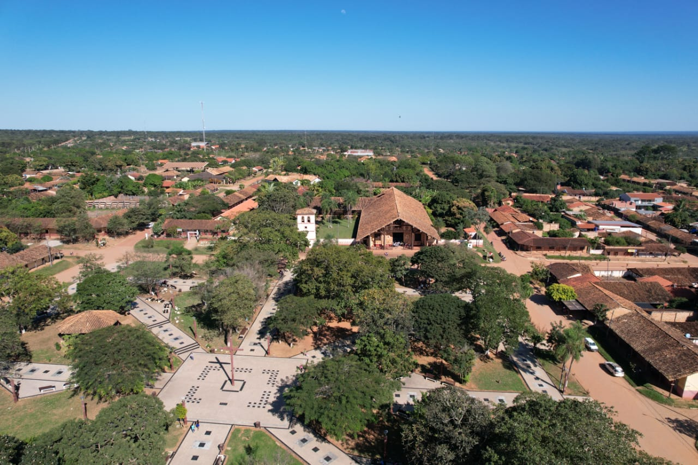
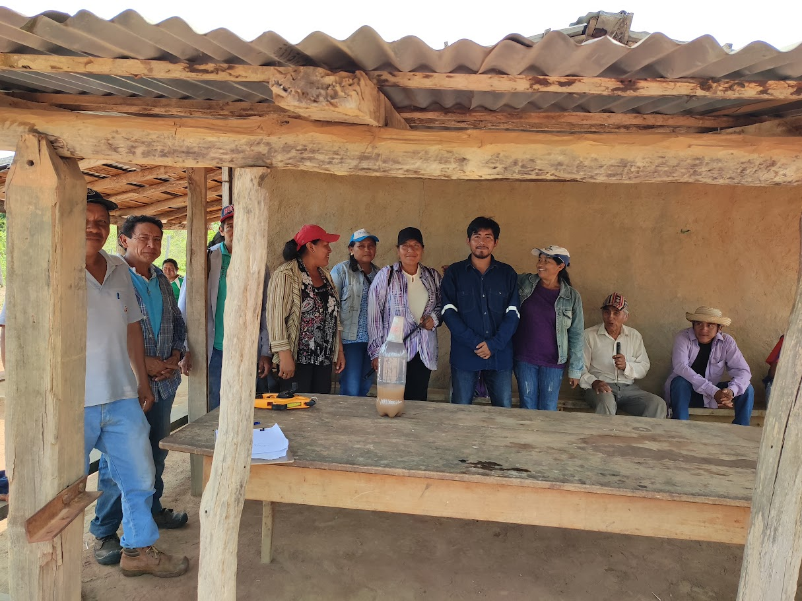

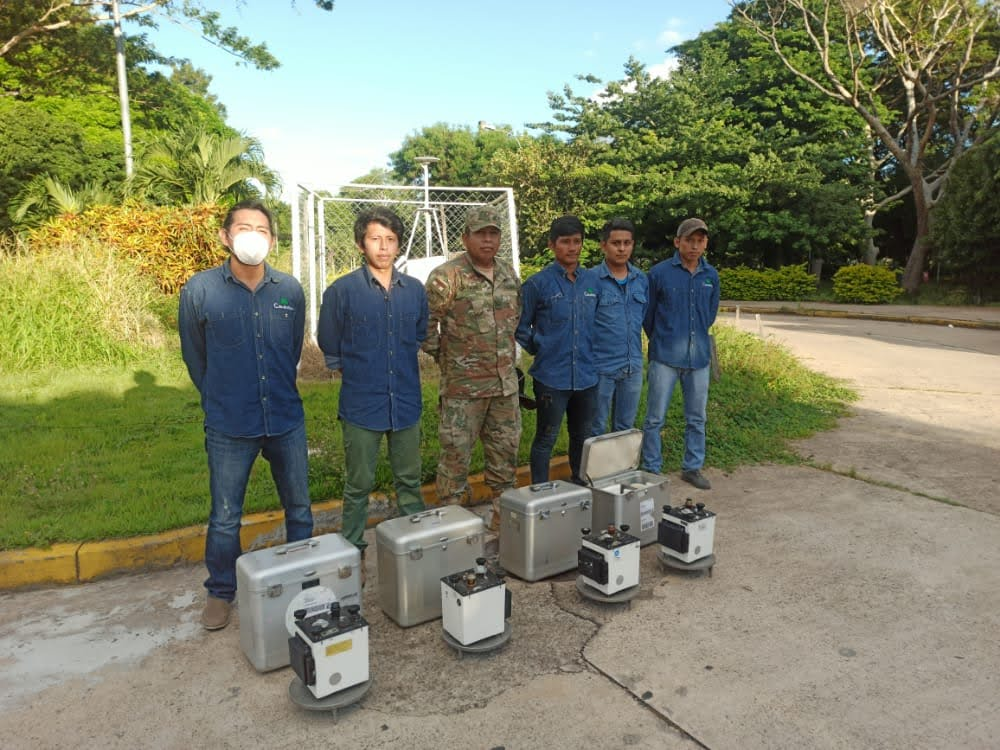
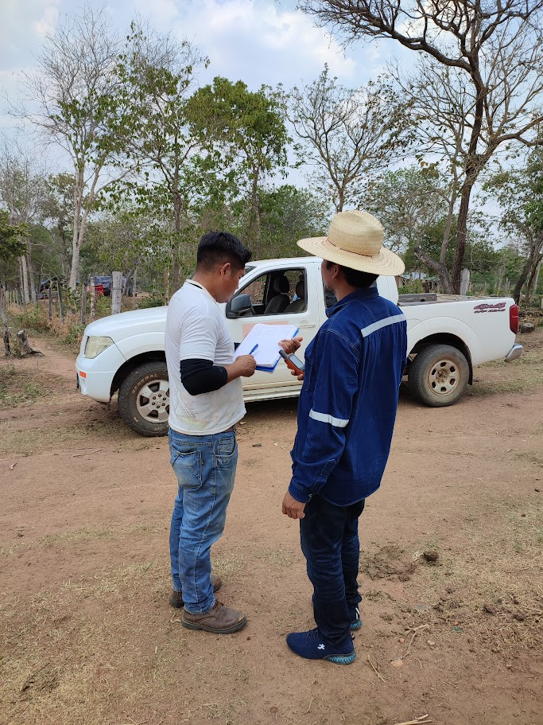
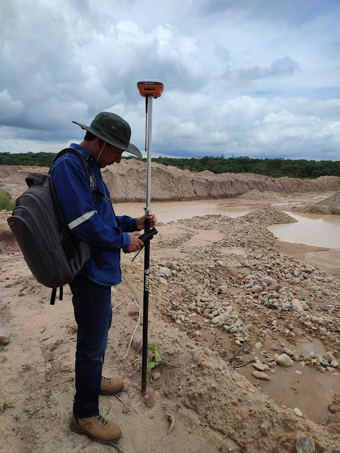
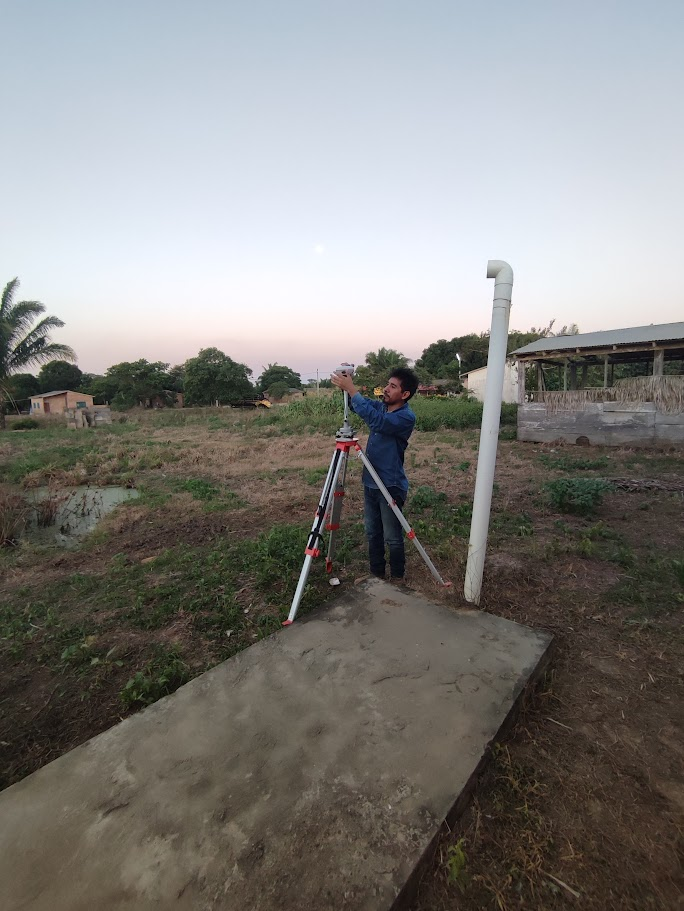
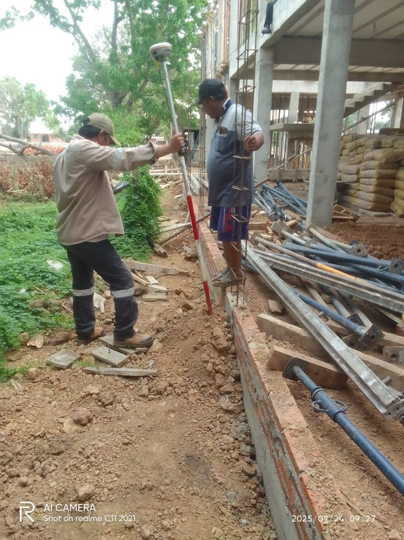
05
Territorio
Territorio
06
Alcance Formativo
Alcance Formativo
07
Investigacion
Líneas de investigación
En proceso
Estimación y validación del retardo troposférico cenital (ZTD) y del vapor de agua precipitable (PWV)
Desarrollo esta investigación a partir de estaciones GNSS continuas en Bolivia para el monitoreo hidroclimático, con estudio en SCRZ, URUS y CBMB.
En proceso
Determinación de un campo de velocidades regional a través de GAMIT/GLOBK
Aplico este estudio al área metropolitana de Santa Cruz.
08
Reconocimiento e institucionalidad
Reconocimientos y afiliaciones
Reconocimiento 2024
Distinción del Concejo Municipal de San Miguel de Velasco
A inicios de 2024 recibí un reconocimiento por mis contribuciones técnicas y sociales en proyectos municipales, destacando mi capacidad para integrar innovación, desarrollo urbano y enfoque humano en beneficio de la población.
Afiliación
SIB-SC
Soy miembro de la Sociedad de Ingenieros de Bolivia, Regional Santa Cruz, y del Colegio de Ingenieros Agrimensores.